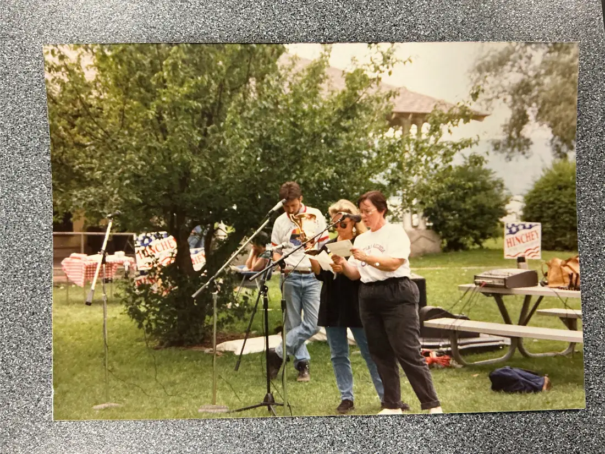
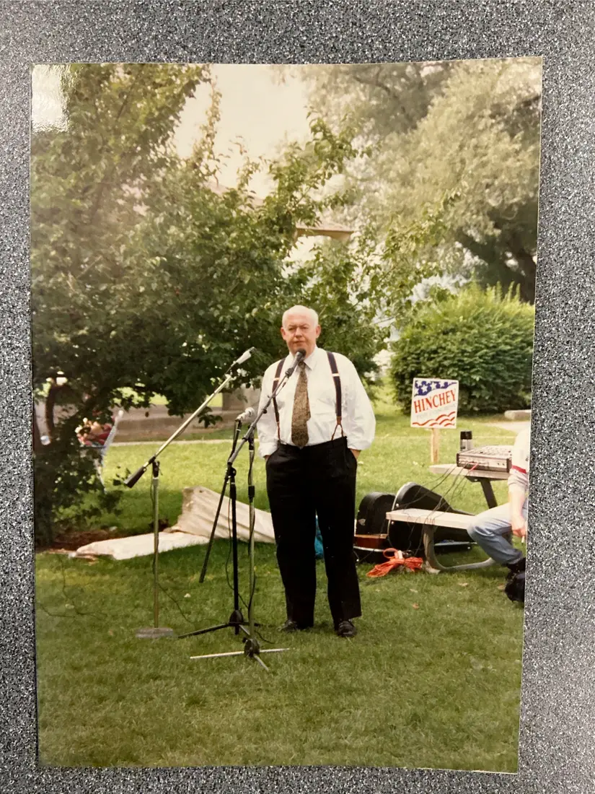
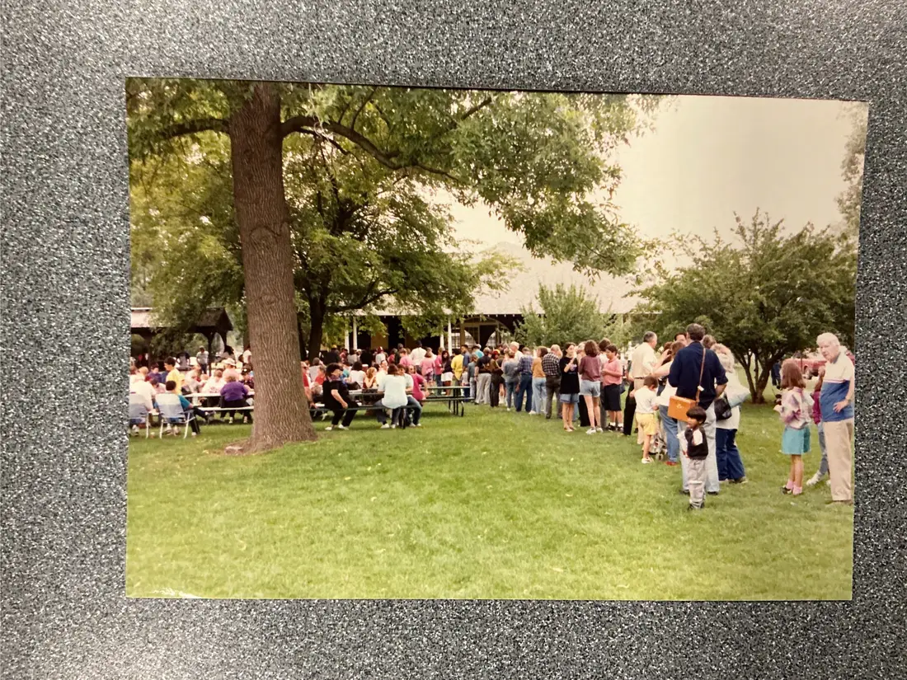
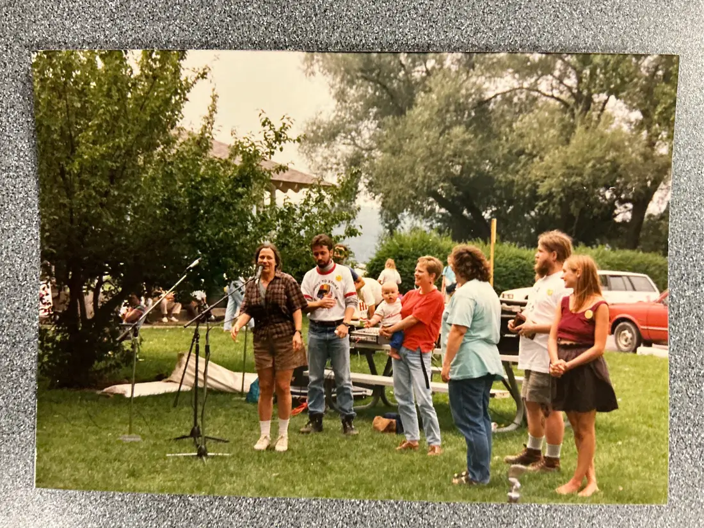
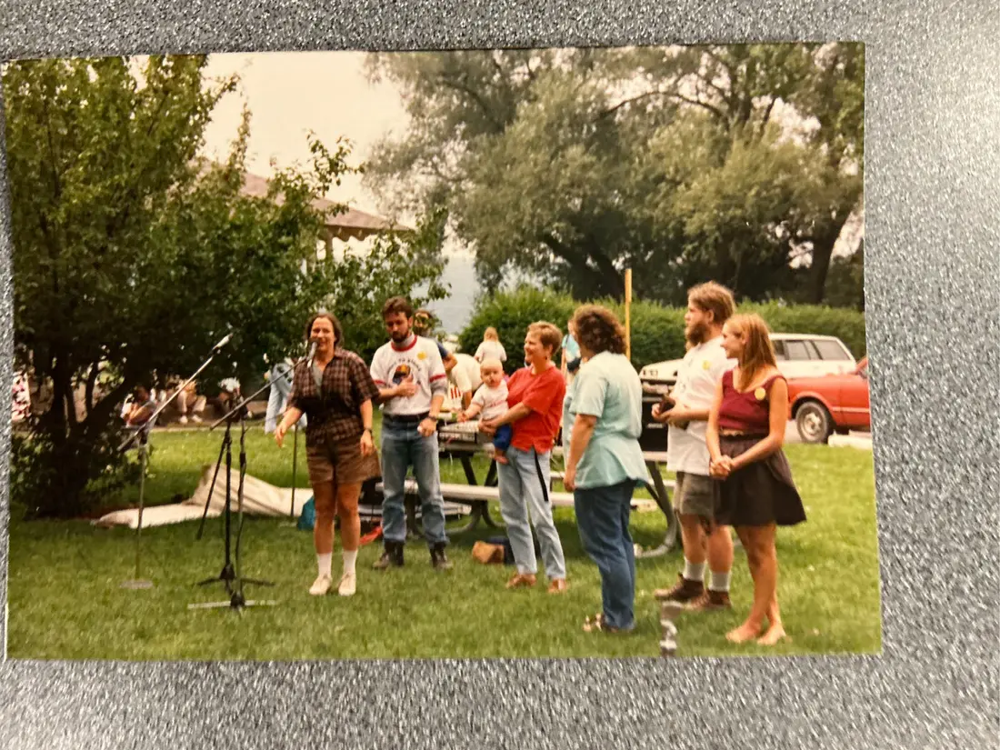
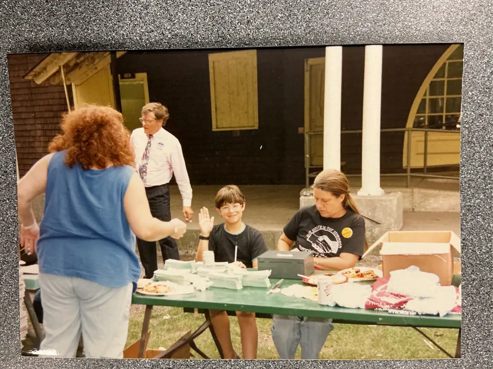
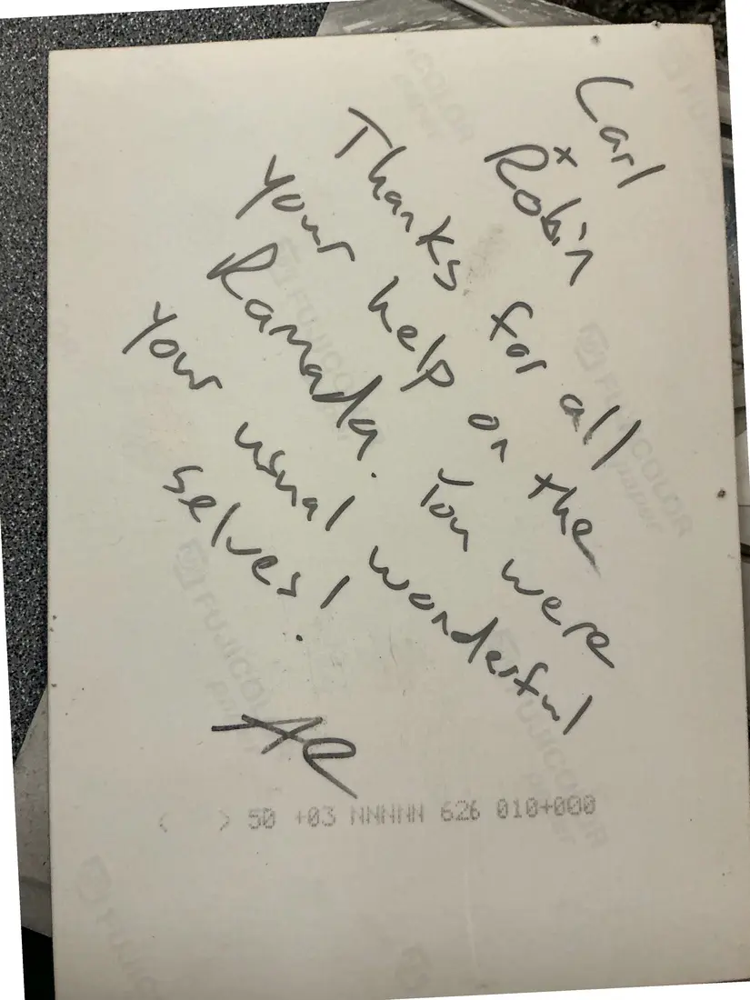

Labor Archive Labor Coalition records tclc-0125
Photographs, 7 images
Photographs: an outdoor labor gathering with Hinchey campaign signs
Undated [1990s]Undated
Six color prints from an outdoor gathering on a lawn: musicians playing (one with a “Hinchey” sign), a man speaking at a microphone, a crowd under trees, people at picnic tables, and a food table. The back of one print carries a handwritten thank-you: “Carl & Robin — Thanks for all your help on the Ramada. You were your usual wonderful selves! — Al.”
Maurice Hinchey represented the area in Congress from 1993 to 2013; the signs suggest a date in the 1990s, but event, place, and date are not identified on the prints. The picnic print appears twice. If you recognize this gathering, please get in touch.
Download or cite this item
Download
Full-resolution master photographs are stored offline. Request a copy .
Cite this item
[Unknown photographer]. “Photographs: an outdoor labor gathering with Hinchey campaign signs.” Undated [1990s]. Tompkins-Cortland Labor Coalition records, collection 6185, Kheel Center for Labor-Management Documentation and Archives, Cornell University Library. Digital copy, Labor Archive, adolfhoromero.com, item tclc-0125, https://adolfhoromero.com/archive/tclc/items/tclc-0125/.
Copy citation
Copy link
Permanent link: adolfhoromero.com/archive/tclc/items/tclc-0125/
Details
Identifier tclc-0125
Created by [Unknown photographer]
Date Undated [1990s]
Type Photograph
Images 7
Place Tompkins and Cortland counties, New York
Language English
Original Tompkins-Cortland Labor Coalition records, collection 6185, Kheel Center for Labor-Management Documentation and Archives, Cornell University Library
Rights Copyright not evaluated. Copyright in these documents may belong to the organizations and people who created them. They are shared here for study, teaching, and organizing education. Rights statement .
Where each page came from
“TCLC Box 1” and “TCLC Box 3-6” are names of the digitization folders these photographs came from. They are project labels and do not describe where a document sits in the Kheel Center's boxes.
Page 1: “Pages from BOX 1 DOCS-4.pdf”, page 22 (TCLC Box 1 (PDF BATCH), Box 1 sequence page 398), rotated for viewing Page 2: “Pages from BOX 1 DOCS-4.pdf”, page 23 (TCLC Box 1 (PDF BATCH), Box 1 sequence page 399) Page 3: “Pages from BOX 1 DOCS-4.pdf”, page 24 (TCLC Box 1 (PDF BATCH), Box 1 sequence page 400), rotated for viewing Page 4: “Pages from BOX 1 DOCS-4.pdf”, page 25 (TCLC Box 1 (PDF BATCH), Box 1 sequence page 401), rotated for viewing Page 5: “Pages from BOX 1 DOCS-4.pdf”, page 26 (TCLC Box 1 (PDF BATCH), Box 1 sequence page 402), rotated for viewing Page 6: “Pages from BOX 1 DOCS-4.pdf”, page 27 (TCLC Box 1 (PDF BATCH), Box 1 sequence page 403), rotated for viewing Page 7: “Pages from BOX 1 DOCS-4.pdf”, page 28 (TCLC Box 1 (PDF BATCH), Box 1 sequence page 404) Previous item Next item
Pages

(open zoom view) Page 1 of 7 Zoom in on page 1 of 7 Open image of page 1 of 7 (2000×1500)
This page is an image with little or no text, so there is no transcription.

(open zoom view) Page 2 of 7 Zoom in on page 2 of 7 Open image of page 2 of 7 (1500×2000)
This page is an image with little or no text, so there is no transcription.

(open zoom view) Page 3 of 7 Zoom in on page 3 of 7 Open image of page 3 of 7 (2000×1500)
This page is an image with little or no text, so there is no transcription.

(open zoom view) Page 4 of 7 Zoom in on page 4 of 7 Open image of page 4 of 7 (2000×1500)
This page is an image with little or no text, so there is no transcription.

(open zoom view) Page 5 of 7 Zoom in on page 5 of 7 Open image of page 5 of 7 (2000×1500)
This page is an image with little or no text, so there is no transcription.

(open zoom view) Page 6 of 7 Zoom in on page 6 of 7 Open image of page 6 of 7 (2000×1500)
This page is an image with little or no text, so there is no transcription.

(open zoom view) Page 7 of 7 Zoom in on page 7 of 7 Open image of page 7 of 7 (1500×2000)
This page is handwritten. Machine reading does not work on handwriting, and no one has transcribed it by hand yet.
Photographs: an outdoor labor gathering with Hinchey campaign signs
Previous page Next page
− +
Rotate Reset view
Open image Close
Drag to move. Scroll, pinch, or double-click to zoom. On the keyboard, + and − zoom, arrow keys move, Page Up and Page Down change pages, and Esc closes.